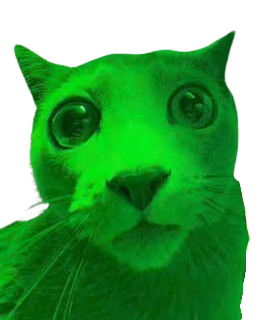

Dogtor Veterinária
No Dogtor, cuidamos da saúde e do bem-estar do seu melhor amigo com toda a dedicação que ele merece. Contamos com uma equipe experiente e apaixonada por animais, pronta para oferecer atendimento humanizado, diagnósticos precisos e tratamentos eficazes para cães, gatos e outros pets.
